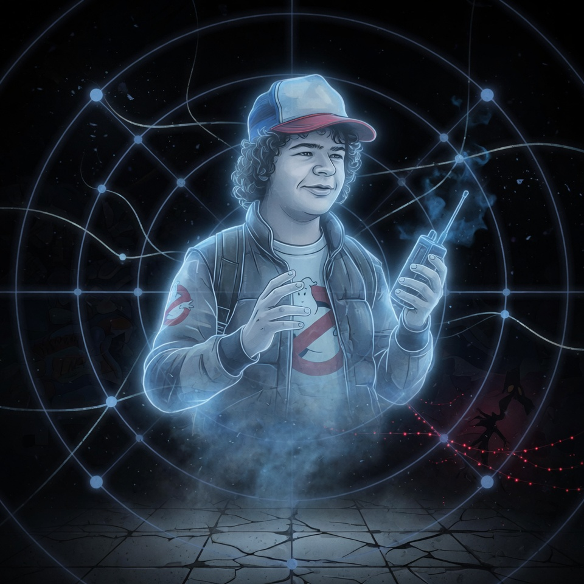
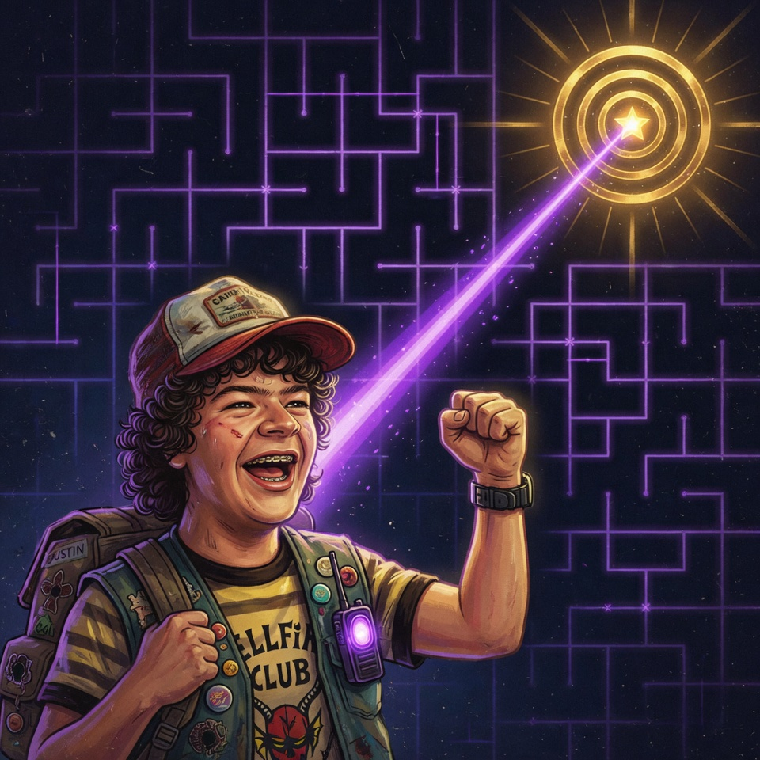

Escape the Upside Down
A* vs BFS Pathfinding
Play Story Mode
Sandbox Mode
[ Press to continue ]

Dustin Henderson
Timeline 1 — Deceased
[ Press to continue ]

Dustin Henderson
Timeline 2 — Saved
[ Press to continue ]
Sandbox
BFS
Explored:
0
Path:
—
Click+Drag
draw walls
Right-click
erase
Drag
●
start /
●
end
Empty Grid
Maze — Hawkins
Maze — Dense Vines
Maze — Spiral
Random 30%
Clear Walls
Clear Search
Speed
DUSTIN'S HEALTH
100%
Run BFS
Run A*
Race Side-by-Side
Continue Story ▸
Timeline 1 vs Timeline 2
BFS:
0
A*:
0
TL1 HEALTH
100%
TL2 HEALTH
100%
Timeline 1 — Hopper (BFS)
Timeline 2 — Eleven (A*)
Speed
Race!
← Back
Two Timelines. One Maze.
Timeline 1 — Hopper (BFS)
0
Nodes Explored
❌ Dustin: 0% — TOO LATE
Timeline 2 — Eleven (A*)
0
Nodes Explored
✓ Dustin: 64% — SAVED
"Same maze. Same shortest path. The only difference was the heuristic — my psychic sense telling me which direction to look. That's what saved him."
— Eleven
Title Screen
Sandbox